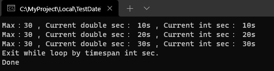
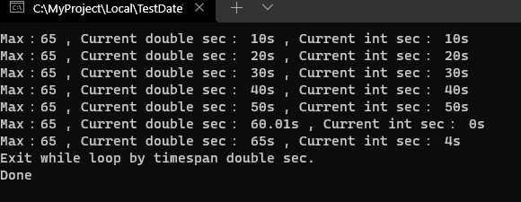

紀錄筆者在工作上遇到計算時間秒數差比對問題。
工作上剛好協助檢視發送請求並等待回應情境，限制預設等待3分鐘情況下，遇到了超過三分鐘情況，卻不會自己中斷跳出等待迴圈，一開始追問題時，都會想說奇怪，都已經能取得當下時間與最開始執行時間計算時間差，並且都能夠取得算出來結果，怎麼可能還會出錯呢?
這時候，就必須去看處理方式和比對屬性欄位是否有陷阱，往往魔鬼藏在細節裡面，在此情境中是使用秒數去做比對。
為了模擬情境，使用Dotnet Core 3.1建立一個Console專案，並且內容如下
首先，針對取得一開始執行時間、迴圈取得當下時間使用方法都是DateTime內建屬性Now來取得
DateTime.Now
設定一個上限門檻變數maxSec，當一開始執行時間與迴圈取得當下時間計算時間差秒數已超過此門檻，預期程式會跳出迴圈並結束。
計算時間差使用DateTime內建方法Subtract，它可以將執行主要日期時間實體去減掉指定日期時間，取得中間日期時間差結果。
將取得日期時間差結果取出秒數實體和上限門檻變數maxSec比對。
在迴圈當中每10秒輸出顯示一次訊息，並測試以下兩種情境。


依據測試輸出結果，兩個情境都會自動跳離迴圈，情境一是由TimeSpan內Seconds變數來判斷跳離，它是int變數，情境二是由TimeSpan內TotalSeconds變數來判斷跳離，它是double變數。
TimeSpan內Seconds變數，對應範例程式變數 secTimeSpan內TotalSeconds變數，對應範例程式變數 sec2情境一跳出迴圈條件式為以下
if (sec >= maxSec)
{
Console.WriteLine($"Max：{maxSec} , Current double sec： {sec2}s , Current int sec： {sec}s");
Console.WriteLine("Exit while loop by timespan int sec.");
break;
}
情境二跳出迴圈條件式為以下
if (sec2 >= maxSec)
{
Console.WriteLine($"Max：{maxSec} , Current double sec： {sec2}s , Current int sec： {sec}s");
Console.WriteLine("Exit while loop by timespan double sec.");
break;
}
依據兩個情境輸出結果，可以觀察到當門檻秒數是在一分鐘(60秒)內，迴圈跳離會由情境一跳出條件執行，相反地，超過一分鐘(60秒)則由情境二跳出條件執行。
可以從情境二輸出結果看到當sec2為60.01秒，sec為0秒，當sec2為65秒，sec為4秒。
使用情境一跳出條件式，TimeSpan內Seconds變數來判斷時，碰到60秒情況int值會變成0重新開始計算，永遠不會觸發秒數門檻為65秒情況。
使用情境二跳出條件式，TimeSpan內TotalSeconds變數則會繼續從60秒接續計算下去，所以可以從輸出畫面看到出現65秒內容，並觸發秒數門檻為65秒跳出迴圈門檻。
關於TimeSpan內Seconds變數，依據官方文件說明，其回傳範圍為 -59 到 59，之後針對秒數比對需特別使用比對來源內容。
相關參考：